National Model Railroad Association · Achievement Program
Model Railroad Engineer – Electrical
Statement of Qualifications: supporting documentation
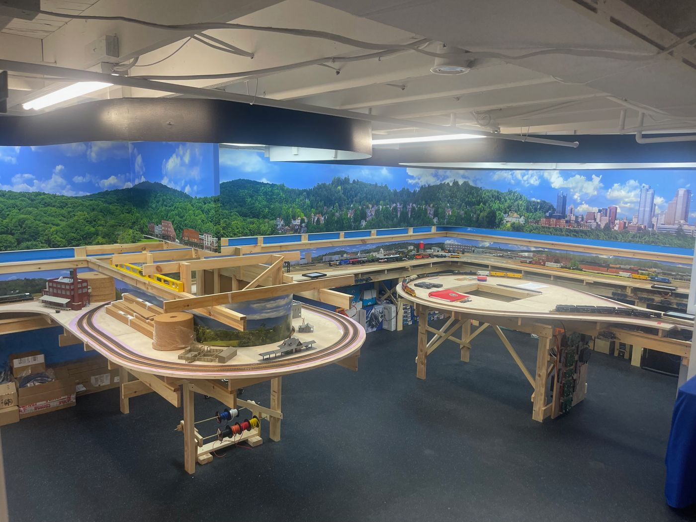
Railroad
HART Railroad, HO scale, Digital Command Control
Member
As named on the SOQ form (page 1)
Region / Division
Northeastern Region (NER) / Sunrise Trails Division
Requirements
NMRA SOQ form, Model Railroad Engineer – Electrical, January 2025
Document
Version 2.0, {{DATE}}. Built from the railroad's records by docs/ap/electrical/build_soq.py
Summary
This document supports an application for the NMRA Achievement Program certificate Model Railroad Engineer – Electrical. It shows that each requirement on the Statement of Qualifications (SOQ) form is met on the member's HO layout, the HART Railroad, and it gives the evaluator what is needed to verify each claim: the track plan, schematic drawings, photographs, the commercial components used, and a step-by-step demonstration plan.
The layout is built in stages. Every claim in this document is demonstrated on the finished staging level and helix, which are fully wired and in use for operating sessions. The main and upper levels above it are under construction and are not relied on.
The claims are:
Requirement 1: DCC control of two or more trains at once in either direction, on a level with 43 separately gapped and detected sections in six protected power districts, two reversing sections, a passing siding, three engine storage tracks and a five-track yard with its own lead.
Requirement 2 (three trackwork items): turnouts with powered frogs, crossovers, and reversing sections on auto-reversers.
Requirement 3 (three control features): (a) electrical turnout position indication, (b) track occupancy indication, and (v) a computer-to-railroad interface designed, programmed and published by the member.
Requirements 4 and 5: drawings D1 to D6 and the railroad's own wiring records (Appendix H).
Chapter 2 gives a one-page compliance matrix. Chapter 8 is the witness demonstration plan.
Contents
List of figures and photographs
List of tables
Introduction
Purpose and scope
The SOQ form asks the member to build and demonstrate an electrical control system (Requirement 1), wire three trackwork items (Requirement 2) and three control features (Requirement 3), draw the propulsion schematic and the schematics of the six chosen items (Requirements 4 and 5), and submit the package with a signed witness certification (Requirement 6). This document is that package's attachment. Each requirement has its own chapter. Each claim in it follows the same pattern:
the requirement, as worded on the SOQ form;
how the layout meets it, with the construction method and the commercial components named;
the evidence: a plan clip, a schematic drawing, a photograph or a record;
the demonstration the witness can ask for, cross-referenced to Chapter 8.
The railroad
The HART Railroad is an HO scale layout, operated with Digital Command Control (DCC). The plan is an original design with three levels joined by a two-track helix. Its control system has four parts:
Track power: a TCS CS-105 command station and TCS boosters, distributed through a booster matrix to protected power districts ().
Field control: LCOS radio control nodes (Beagle Bay Inc.) beside the track drive the switch machines and signals, read the turnout contacts and fascia buttons, and read current-sense block detectors.
Computer: JMRI on a Raspberry Pi, with dispatcher and CTC panels on the layout's computers.
The link between them: a radio-to-network bridge designed and written by the member ().
The staging level, the lowest of the three, is a complete railroad in its own right. It has a continuous main line, two reversing sections, a passing siding, a five-track yard, engine storage and holding tracks, all wired, detected and controlled as described here. Plan P1 () shows it.
Plan P1: the staging level, on which every claim in this document is demonstrated. Copied from the railroad's system schematic with its own names removed and generic labels added; not to scale. Switch numbers are as marked on the layout fascia. Plan P0 () shows the same track to scale.Plan P0: the staging level to scale, from the railroad's track plan 5.3b. Switch numbers match Plan P1; E1 to E3 are the engine storage tracks. Scale bar 100 cm.
Labels used in this document
The railroad's own track and station names mean nothing to a reader who has not visited it, so this document uses generic labels instead. The main ones are listed below. Appendix A cross-references each one to the name painted on the fascia and used in the wiring records, so the witness can find it on the layout.
Generic labels used in this document
Label
What it is
Main line
The continuous loop of the staging level, including the double-track section at the east end
RS-1
Reversing section 1: the west part of the main line, Switch 1 to Switch 23, on an AR-10 auto-reverser
RS-2
Reversing section 2: the return loop at the east end, on a PSX-AR auto-reverser
Passing siding
The siding beside the main line from Switch 5 to Switch 7
Yard, Y1 to Y5
The five-track yard, worked from the yard lead through Switches 15 to 21
Yard lead
The track from Switch 7 to Switch 15 that serves the yard and engine storage without using the main line
E1 to E3
Engine storage tracks, off the yard lead at Switches 9 and 11
District A to D
The four power districts on circuit breakers (RS-1 and RS-2 are the fifth and sixth)
Section
A length of track gapped in both rails at both ends, with its own feeders and its own detector channel. The SOQ form calls this a block.
Summary of compliance
The table below lists every requirement on the SOQ form, the item claimed, and where the evidence is. Every requirement is met on the staging level as built.
Compliance matrix
Req.
SOQ form item
Claimed
Evidence
Demo
1
Two mainline trains, simultaneous and independent, either direction
DCC, each locomotive on its own address
; D1
W1
1
DCC: gaps/switches/phase for troubleshooting
43 sections gapped in both rails; 6 protected districts
; D1, D2; Appendix B
W2
1
One reverse loop or wye or turntable or transfer table
Return loop RS-2 (and RS-1)
; P2, D5
W3
1
One passing siding
Passing siding, Switch 5 to Switch 7
; P3
W4
1
Storage for at least two unused motive power units
Engine storage E1 to E3
; P5
W5
1
Yard of three or more tracks with a lead independent of the main
Yard Y1 to Y5 and its lead
; P4
W6
1
Power supply with protective devices
4 circuit breakers and 2 auto-reversers
; D1
W7
2
Turnout
Powered frogs through the switch machine contact
; D3
W8
2
Crossover
Crossovers at Switches 7, 23 and 35
; D4
W9
2
Other
Reversing sections (2) on auto-reversers
; D5
W3
3
(a) Electrical turnout position
Fascia lamps and panel lamps, every staging turnout
; D3
W10
3
(b) Track occupancy
43 detected sections shown on the panels
; D2
W11
3
(v) Computer to railroad interface
The member's LCOS-to-MQTT bridge
; D6; Appendix E
W12
4
Propulsion schematic
Drawings D1 and D2 with Appendix B
–
5
Schematics of the six items
Drawings D2 to D6 and wiring records
; Appendix H
–
6
Track plan, descriptions, witness form
This document and the signed form
W13
Requirement 1: the electrical control system
SOQ form, Requirement 1Construct and demonstrate on your own, someone else's layout, or a club layout, the satisfactory operation of an electrical control system on a model railroad capable of simultaneous and independent control of two mainline trains in either direction, and containing at least: [the items in Sections 3.2 to 3.7].
Two mainline trains, simultaneously and independently, in either direction
How it is met. The layout runs on DCC. The command station puts one digital signal on all the track. Each locomotive's decoder answers only to its own address and takes its speed and direction from the packets sent to that address. Two trains anywhere on the main line therefore run at the same time, each under its own throttle, in either direction, with no cab selection or block switching. The command station and boosters are shown in ; the path from throttle to rail is drawing D1.
Evidence. Drawing D1; ; . The staging level is used for operating sessions in which several crews run trains at the same time.
Demonstration. W1: two trains on the main line at once, each on its own throttle, each reversed during the run.
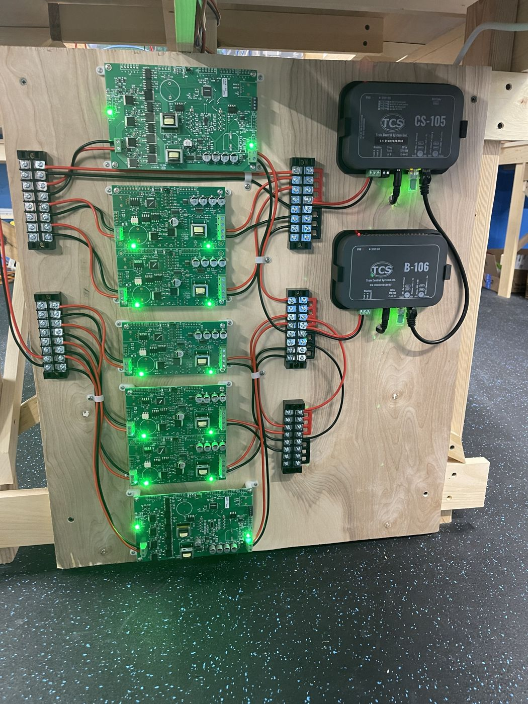
The track power panel: TCS CS-105 command station (top right), TCS B-106 booster (below it), the PSX-series circuit-breaker boards (left, lamps lit) and the terminal strips of the booster matrix.
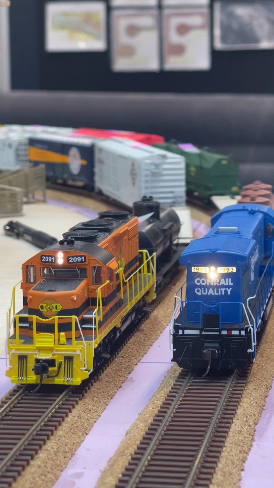
Two trains under way at the same time on the staging main line, each on its own throttle.
Command control: gaps and switches for troubleshooting
How it is met. The SOQ form asks a DCC layout for gaps and switches that allow troubleshooting. The staging level and helix are divided twice over:
Six power districts, each on its own protection device: four on PSX-series circuit breakers (Districts A to D) and the two reversing sections on their auto-reversers, which also cut power on a short (RS-1, RS-2). A short or fault shuts down only its own district, and the breaker's lamp shows which one. Any district can be isolated at its breaker while the rest of the railroad runs. Drawing D1.
43 detected sections, each gapped in both rails at both ends and fed from its district bus by its own feeder pair, which passes through its own detector channel (D2, Appendix B). A fault can be traced to one section by lifting its feeder pair at the terminal strip, and the panel shows which section a train or a short is in.
The district buses are run under the benchwork as pairs of heavy wire, joined at terminal strips (). The feeder pairs drop from the bus to the rails.
Evidence. Drawings D1 and D2; Appendix B (every section and its detector); ; .
Demonstration. W2: the witness is shown the gaps, a feeder pair and a district breaker, and a short in one district stops only that district.
A terminal strip under the benchwork joining district bus and feeder wiring.A section boundary: insulated gaps in both rails.
Reverse loop
How it is met. The east end of the main line has a return loop, RS-2 (Plan P2, ). A train leaving the double-track section on one track runs around the loop and comes back on the other, facing the other way. The loop is gapped in both rails at both ends and fed through a PSX-AR auto-reverser, which matches the loop's polarity to the track a train enters from (drawing D5). The west part of the main line, RS-1 from Switch 1 to Switch 23, is a second reversing section wired the same way on an AR-10, because the main line's loop at the west end also turns trains. Each section is longer than the longest train run on the level; RS-1 is 217 in between its gaps.
Evidence. Plan P2; drawing D5; ; .
Demonstration. W3: a train runs through each reversing section in both directions without stopping and without a short.
Plan P2: the two reversing sections and their gaps.
The return loop RS-2 from above, gaps marked.The AR-10 (RS-1) and PSX-AR (RS-2) as installed.
Passing siding
How it is met. A passing siding lies beside the main line between Switch 5 and Switch 7 (Plan P3, ). It is 144 in long, room for about 19 cars, and joins the main line at both ends, so a train can wait on it while another passes on the main in either direction. Like every track on the level it is its own detected section, gapped at both ends. The double-track section at the east end gives a second place for trains to pass.
Evidence. Plan P3; .
Demonstration. W4: one train holds on the siding while a second passes it on the main line.
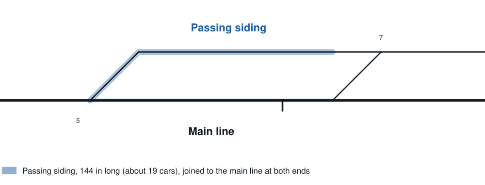
Plan P3: the passing siding.
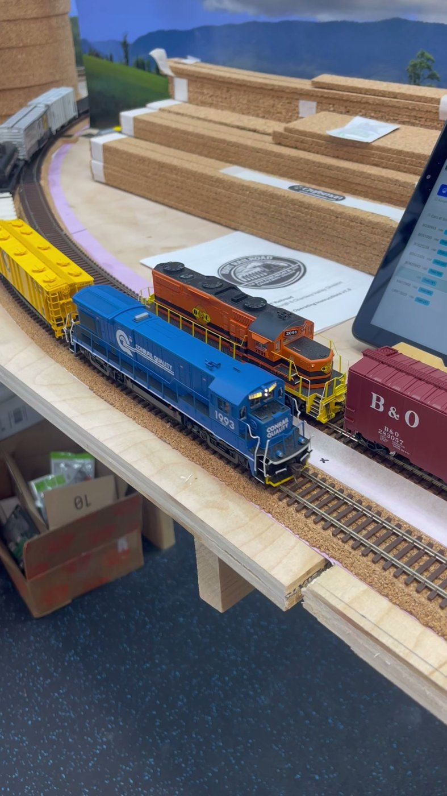
The passing siding in use: one train holds while another passes.
Storage for two unused motive power units
How it is met. Three stub-ended engine storage tracks, E1 to E3, leave the yard lead at Switches 9 and 11 beside an engine house (Plan P5, ). Each holds at least one locomotive and is its own detected section. Under DCC, a locomotive parked there with its throttle at zero stays put while others run.
Evidence. Plan P5; .
Demonstration. W5: two locomotives stand on the storage tracks while trains run elsewhere.
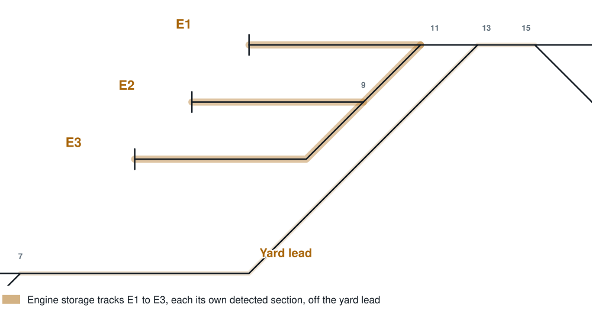
Plan P5: engine storage.Locomotives on the engine storage tracks beside the engine house.
Yard with a switching lead independent of the main line
How it is met. The yard has five tracks, Y1 to Y5, from 100 to 218 in long (Plan P4, ). Its west ladder, Switches 15 to 21, is worked from the yard lead. The lead leaves the main line at Switch 7 and runs to Switch 15 on its own track, so a switcher can work the yard from the lead while trains run on the main line. Each yard track and the lead are separate detected sections.
Evidence. Plan P4; ; .
Demonstration. W6: a switcher works the yard from the lead while a train runs on the main line.
Plan P4: the yard and its lead.
The yard, looking along its tracks.
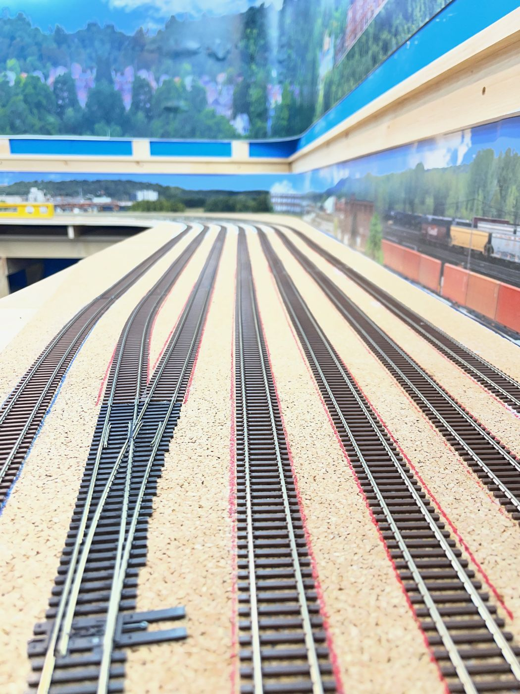
A ladder of Peco turnouts on the staging level.
Power supply with protective devices
How it is met. Track power comes from the command station's own output and the boosters, through the booster matrix, to six protection devices (D1):
four DCC Specialties PSX-series electronic circuit breakers, one per district A to D, each with a status lamp that shows a trip;
the AR-10 and DCC Specialties PSX-AR auto-reversers on RS-1 and RS-2, which reverse polarity when a train bridges a gap and cut the section off if a short lasts.
Every section of the staging level and helix is therefore behind a device that clears a short within milliseconds, without tripping the booster and without stopping the other districts. The command station and boosters have their own internal short protection behind these.
Evidence. Drawing D1; ; Appendix H (power district record).
Demonstration. W7: a short placed in one district trips only its breaker, which resets once the short is removed.
Requirement 2: trackwork items
SOQ form, Requirement 2Wire and demonstrate the electrical operation of at least three of the following track items. Claimed: Turnout; Crossover; Other: reversing sections on auto-reversers.
Turnout
Construction. Every turnout on the staging level is a Peco turnout with a powered frog, thrown by an MTB MP4 slow-motion switch machine mounted under the benchwork (). The level has twenty numbered switch locations; three are crossovers of two turnouts each.
Wiring. The MP4 has two SPDT contacts that move with its throwbar (D3):
Contact 1 powers the frog. Its two throws go to the two stock rails and its common to the frog. With the points against one stock rail the frog takes that rail's polarity, and the contact changes over with the points. Both frog rails are gapped beyond the frog so the frog's polarity cannot reach the track beyond.
Contact 2 reports the position for the indication described in .
The machine motor is driven from a 12 V output of the LCOS control node beside the turnout, commanded from the fascia button, a DCC throttle or the computer.
Commercial components. Peco turnouts; MTB MP4 switch machines; LCOS output and input boards (Beagle Bay Inc.).
Evidence. Drawing D3; ; ; Appendix H (turnout wiring record and node pages).
Demonstration. W8: a locomotive crawls through a turnout on both routes without stalling on the frog, and a meter shows the frog's polarity change with the points.
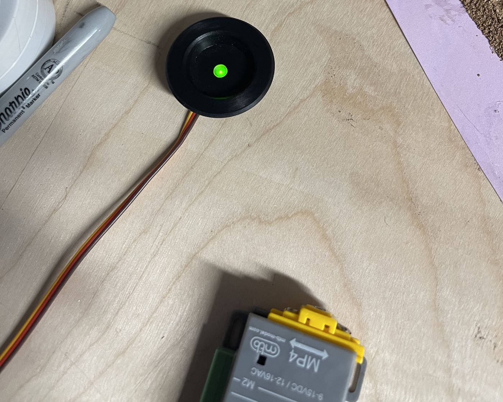
An MTB MP4 switch machine (bottom) and the Touch Toggle fascia button that shows its position (centre, lamp lit).Frog wiring at the MP4: stock rails to the throws, frog to the common.
Crossover
Construction. Crossovers of two Peco turnouts join parallel tracks at Switch 23 (halves 23a and 23b) and Switch 35 (35a and 35b), at the two ends of the double-track section, and at Switch 7, where the passing siding meets the main line and the yard lead.
Wiring. Each half is wired as a turnout (D3) on its own MP4, and both machines are thrown together from one command. Because each frog takes the polarity of its own route, both rails between the two frogs are gapped. Each half is its own detected section, so the panel shows which half a train is on (D4).
Commercial components. As for the turnout.
Evidence. Drawing D4; .
Demonstration. W9: a train runs through a crossover in both directions with no short at the gaps between the frogs.
A crossover from above, with the gaps between the frogs marked.Peco turnouts on the staging level.
Other: reversing sections on auto-reversers
Construction. RS-1 and RS-2 (Plan P2) are each gapped in both rails at both ends. Each is fed from the booster matrix through its own auto-reverser, the AR-10 for RS-1 and the PSX-AR for RS-2, and its feeders pass through a detector channel like any other section.
Operation. When a train's wheels bridge a gap with the polarity wrong, the auto-reverser sees the short and swaps the section's two outputs within milliseconds, faster than any breaker trips, so the train runs through without a pause. The swap has to finish before the train reaches the gap at the far end, so each section is longer than the longest train (D5).
SOQ form, Requirement 3Wire and demonstrate the satisfactory electrical operation of at least three of the following features. Claimed: Electrical turnout position (a); Track occupancy (b); Computer to railroad interface (v).
Choice of features
The railroad has more control features than the three the form needs. The three claimed were chosen because each can be seen working on the layout and none depends on a commercial control product:
(a) Turnout position is wired from the switch machine's own contact. The lamps show where the points actually are, not where they were last told to go.
(b) Track occupancy is detected on every section of the level, and the witness can watch it follow a train.
(v) The computer-to-railroad interface is the member's own design, hardware integration and software, and is published for other modellers to use.
Appendix D lists the further features that are built and working but not claimed (CTC, computer control, computerized block detection and stored-program operation). If an evaluator does not accept one of the three, one of these can be offered in its place.
(a) Electrical turnout position indication
What it does. Every turnout on the staging level shows its position in two places:
On the fascia, at the turnout's Touch Toggle push button. The button's lamp is driven from the MP4's position contact through a Touch Toggle Universal Translator (). A framed route diagram on the fascia also shows the indication, with a lamp at each turnout ().
On the dispatcher and CTC panels, where the same contact is read by an LCOS input board and passed to the computer. Each switch shows a normal or reverse lamp.
Both are driven by the machine's contact, so they show where the points are, whichever control threw the turnout: the fascia button, a DCC throttle or the computer. If a machine fails to complete its throw, the lamp stays where it was. The form asks for at least four turnouts; every staging turnout is wired this way.
Wiring. Drawing D3, contact 2; Appendix H (turnout wiring record, which shows the machine contact, the Universal Translator, the Touch Toggle and the input board; and the node pages, which give each switch's input pins).
Demonstration. W10: four turnouts thrown from three different controls; the fascia lamp and the panel lamp follow each one.
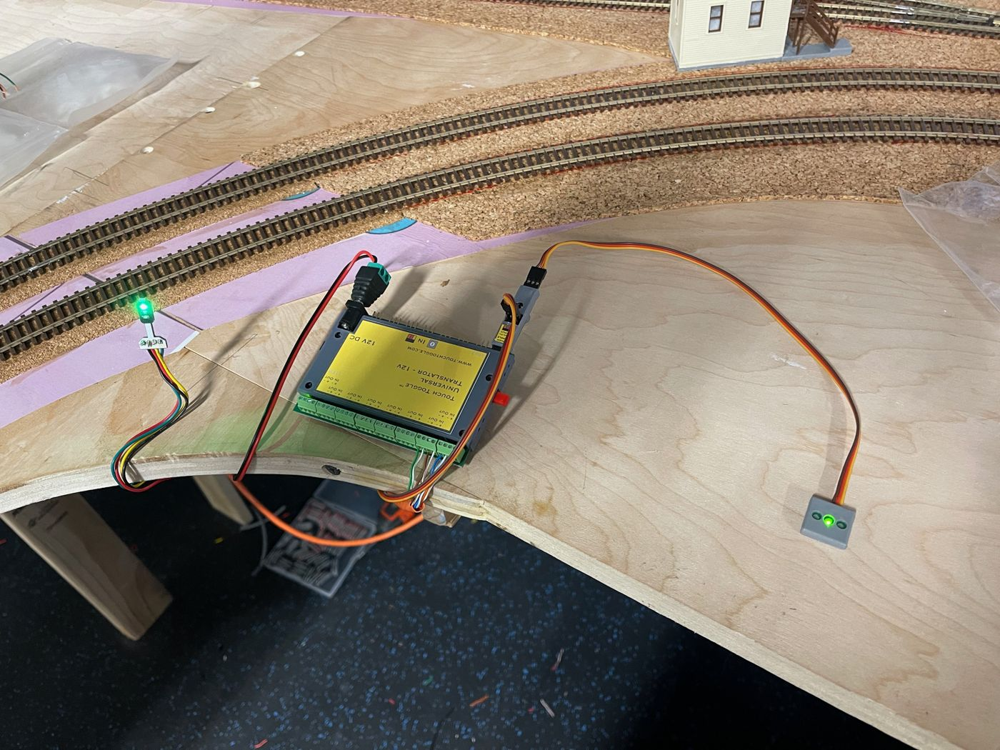
A Touch Toggle Universal Translator wired to its fascia button and lamp (green lamp lit), before mounting.
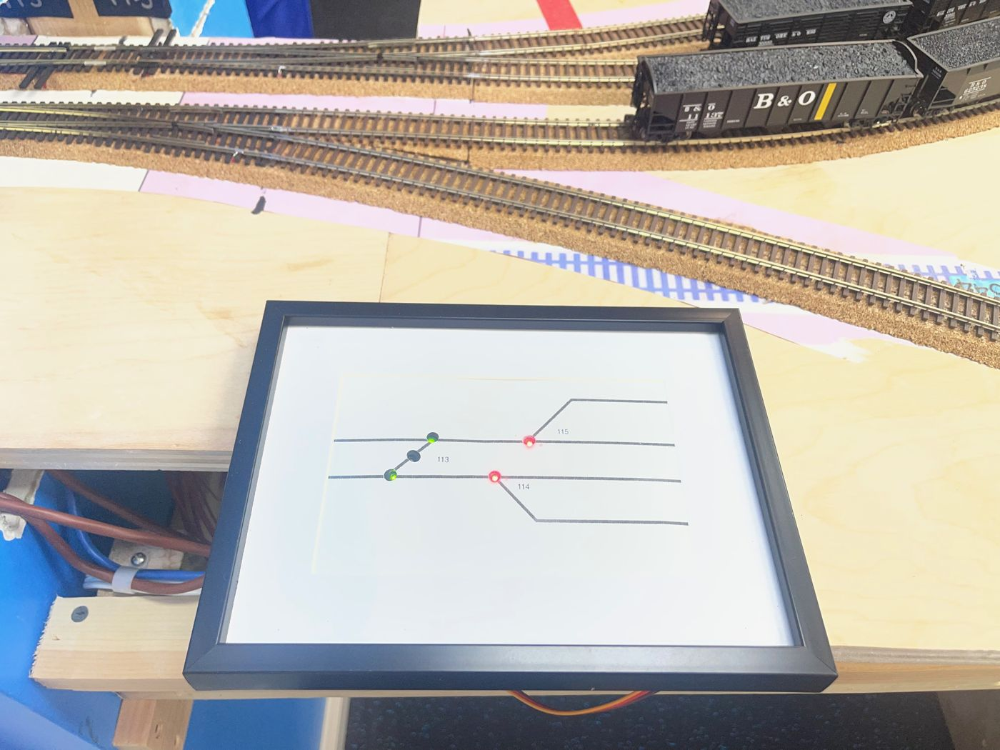
A framed route diagram on the fascia, with a lamp at each turnout showing how it is set.
Turnout set normal: fascia lamp and panel lamp agree.The same turnout set reverse.
(b) Track occupancy indication
What it does. All 43 sections of the staging level and helix are detected, and each shows as occupied on the panels whenever a locomotive or a car with resistor wheelsets is on it. The form asks for at least five blocks.
How it works. Detection is by current sensing. Both feeders of a section pass through one channel of a DNCT2B current-sense board, so any current drawn in the section, by a motor, a lamp or a resistor wheelset, is seen by the board. Each DNCT2B has two channels and serves two sections. Its output goes to the block input of the LCOS node in that area, which reports occupied or clear (D2). The computer shows each section as a lamp on the track it represents, on the dispatcher panel and the CTC panels.
Because each section is gapped in both rails and has its own feeders, detection cannot leak from one section into the next; this is the same division that serves troubleshooting ().
Wiring. Drawing D2; Appendix B (each section with its node and channel); Appendix H (bus wiring record showing the detector chain, and the node pages showing each node's block inputs).
Commercial components. DNCT2B and DNCTA current-sense detectors and LCOS nodes (Beagle Bay Inc.); JMRI (free software) for the display.
Demonstration. W11: a train moved through five or more sections; each lamp lights as the train enters and clears as it leaves.
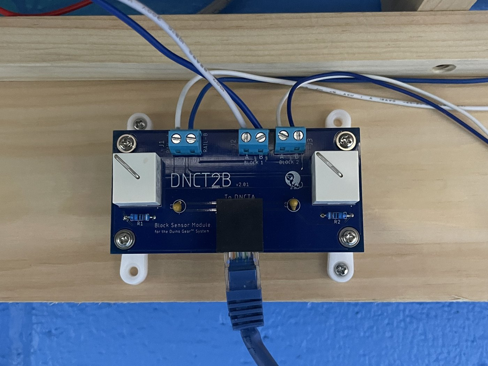
A DNCT2B: both feeders of a section through one channel.The panel with the sections under a train shown occupied.
(v) Computer-to-railroad interface: the LCOS bridge
The problem it solves
The layout's field control uses LCOS, a commercial system of small radio nodes from Beagle Bay Inc. Each node is an Arduino Nano with an nRF24L01 2.4 GHz radio and add-on boards for switch-machine outputs, button and contact inputs, signal lamps and block detectors. The nodes talk to each other over their own radio network. LCOS had no way to connect that network to JMRI, the open-source railroad control program the layout uses for its panels, signal logic and dispatching. The member designed and built that link.
Design
The interface has two parts, both written by the member (D6):
The bridge node is an LCOS node with the member's firmware (C++ for the Arduino Nano). It joins the radio network as a node, subscribes to the events of the field nodes it serves, and turns each event (switch moved, block occupied or clear, button pressed, signal aspect) into one line of text on its USB serial port. Lines that arrive the other way, such as a turnout command, it sends to the right field node as an LCOS radio command.
The bridge program (Python, on a PC) connects that serial port to an MQTT message broker. It publishes each line from the node as an MQTT message, and writes each command message from the broker to the node as a line.
JMRI has a standard MQTT connection, so once the bridge is running, every LCOS turnout, sensor and signal appears in JMRI as an ordinary turnout, sensor or signal head. The layout's panels, signal logic and dispatching need nothing LCOS-specific.
The two halves share a plain text protocol: one message per line, <topic> <payload>, at 250 000 baud. For example, track/turnout/100 THROWN reports that switch 0 on node 1 has thrown, and track/sensor/… ACTIVE reports an occupied block. Each device has a numeric address, the node number times 100 plus the device number, which is also its JMRI system name. Appendix E lists the message types.
Reliability
A link that loses messages would leave the panels wrong, so most of the engineering went into keeping the two ends in step:
The program sends a quiet PING over USB about every 12 seconds. If acknowledgements stop, it reopens the serial port, which resets the node and makes it subscribe again.
A radio-path check echoes a message off the LCOS network's master node. When the echo is lost and then returns, for example after layout power is cycled, the bridge tells the node to subscribe again within one second and keeps retrying until traffic flows.
The program publishes its own state, online or offline, as a retained MQTT message, so JMRI and the operator can see whether the link is up.
If the computer's signal control stops responding, the program sets the field signals to stop and hands them back to local control, instead of leaving the last aspects lit.
Development, testing and publication
Development began in February 2026. The bridge is the layout's only link between the field nodes and the computer, and is in use whenever the layout runs. It is published as open source on GitHub (github.com/lnevo/LCOS_ESP32_MQTT_Client), with setup guides for Windows and Linux, so that other LCOS users can connect their layouts to JMRI.
The bridge in figures (repository as of {{DATE}})
Item
Value
Firmware (bridge node, C++)
5 files, about 1,200 lines
Bridge program (PC, Python)
1 program, about 2,100 lines
Automated tests
29 tests in 3 suites: connection watchdog, signal safety guard, signal aspect names
Revisions
146 commits, February to November 2026
Documentation
Setup guide, Windows and Linux installation notes, signal and recovery design notes
What is original and what is commercial. Designed and written by the member: the bridge firmware, the bridge program, the message protocol between them and the device addressing. Commercial or existing products used: the LCOS boards and LCOS library (Beagle Bay Inc.), the Arduino Nano and nRF24L01 radio, JMRI (free software) and the Mosquitto MQTT broker (free software).
Wiring and diagrams. Drawing D6; Appendix E; Appendix H (node summary and node pages).
Demonstration. W12: with the program's console open, a turnout is thrown from the computer panel. The command line appears in the console, the machine moves, and the position report comes back and lights the panel lamp. A train entering a section produces an occupancy message the same way.
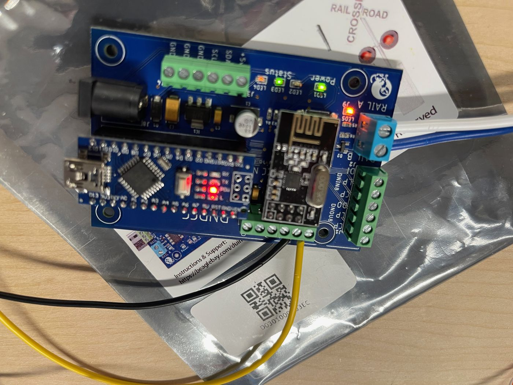
An LCOS node: Arduino Nano and nRF24L01 radio on its carrier board. The bridge node is the same hardware running the member's firmware.
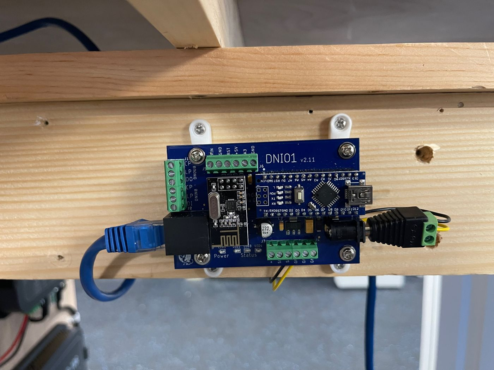
A field node mounted under the layout.
The bridge node on its USB link to the PC.The bridge program console: a command out and its report back.
Requirements 4 and 5: schematic drawings
SOQ form, Requirements 4 and 5Prepare a schematic drawing of the propulsion circuitry of the model railroad in Section 1 showing the gaps, blocks, feeders, speed and direction control, electrical switches and power supplies. Prepare schematic drawings identifying the wiring and components of the six items in Requirements 2 & 3.
Drawings D1 to D6 were drawn for this application and are printed as full-page plates after Chapter 9. Appendix H reproduces the railroad's own wiring records, which give the as-built detail: every bus, node, pin and turnout.
Requirement 4: where each element of the propulsion schematic is shown
Element named on the form
Where shown
Gaps
D2 (every section, both rails, both ends); D3, D4 (frog gaps); D5 and P2 (reversing sections)
Blocks
D2 and Appendix B (all 43 sections); P1
Feeders
D2 (feeder pair per section, through its detector channel); Appendix H, bus wiring record
Speed and direction control
D1 (throttles, command station, DCC to each decoder)
D1 (command station and boosters); Appendix H, power district and track bus records
Requirement 5: schematics for the six claimed items
Item
Drawings
Wiring records (Appendix H)
2 · Turnout
D3
Turnout wiring; turnout summary; node pages
2 · Crossover
D4 (with D3)
Turnout summary; node pages
2 · Other: reversing sections
D5, P2
Power districts; track buses
3a · Turnout position
D3 (contact 2)
Turnout wiring; node configuration; node pages
3b · Track occupancy
D2
Bus wiring (detector chain); node pages
3v · Computer to railroad interface
D6
Node summary; node configuration
Requirement 6: the SOQ package
SOQ form, Requirement 6Submit a completed Statement of Qualifications (SOQ) which shall include the following: attachment showing the track plan required in Requirement 1; description of the track work features, method of construction and identification of commercial components used in 2 & 3; the signed witness certification form showing that each of the above items are operational and meet all applicable NMRA Standards.
Contents of the SOQ package
Required
Where
Status
Completed SOQ form
Pages 1 and 2 of this PDF
Items ticked; member's details and signature to be added by hand
Track plan (Requirement 1)
Plan P0 (to scale) and Plans P1 to P5
Included
Description, construction and commercial components (2 and 3)
Chapters 4 and 5; Appendix C
Included
Signed witness certification
SOQ form, evaluator rows; Chapter 8 is the plan for the visit
At the witness visit
Witness demonstration plan
The visit is planned to take about 90 minutes. Each step names the requirement it proves, what is done and what the witness should see. The member prepares the layout beforehand: track cleaned, two locomotives on the main line, a switcher on the yard lead, two locomotives on the engine storage tracks, the panels and the bridge program running, and a meter and an NMRA standards gauge to hand.
Demonstration steps
Step
Req.
Action
Expected result
Seen
W1
1
Run two trains on the main line at once, each on its own throttle; reverse each during the run.
Each train answers only its own throttle, in both directions.
W2
1
Show a pair of gaps, a feeder pair at its terminal strip and a district breaker. Lift one section's feeder pair.
That section goes dead and dark on the panel; the rest of the district runs.
W3
1, 2
Run a train through RS-2 and through RS-1, both directions.
No stop, no breaker trip; the auto-reverser changes over as the train crosses the gap.
W4
1
Hold one train on the passing siding; run a second past it on the main line.
The trains pass.
W5
1
Point out two locomotives standing on E1 to E3 while W1 runs.
Stored locomotives stay put.
W6
1
Switch the yard from the yard lead while a train runs on the main line.
Yard work does not use the main line.
W7
1
Lay a coin across the rails in one district; remove it.
Only that breaker trips (lamp shows it); it resets when the short is removed.
W8
2
Crawl a locomotive through a turnout on both routes; measure the frog against each stock rail.
No stall or short at the frog; frog polarity follows the points.
W9
2
Run a train through the crossover at Switch 23 or 35, both directions.
No short at the gaps between the frogs.
W10
3a
Throw four turnouts: two from the fascia, one from a DCC throttle, one from the computer panel.
Each turnout's fascia lamp and panel lamp follow the points.
W11
3b
Run a train through five or more sections while watching the panel.
Each section lights as the train enters and clears as it leaves.
W12
3v
With the bridge console open, throw a turnout from the computer, then run a train into a section.
Check the claimed turnouts and a crossover with the NMRA standards gauge; check the wheels of the locomotives used.
Track and wheels within NMRA standards.
Conclusion
The staging level of the HART Railroad meets each item of Requirement 1 as built: DCC control of two or more trains in either direction, 43 gapped and detected sections in six protected districts, two reversing sections, a passing siding, engine storage and a five-track yard with its own lead. Three trackwork items (turnouts with powered frogs, crossovers, and reversing sections on auto-reversers) and three control features (turnout position indication, track occupancy indication, and the member's own computer-to-railroad interface) are wired, documented and ready to demonstrate. Drawings D1 to D6 and the railroad's wiring records meet Requirements 4 and 5. What remains is the witness visit set out in Chapter 8 and the signatures on the form.
Drawings D1 to D6
Drawn for this application from the railroad's records. Not to scale. Colours: red for track power and frogs, blue for detection and data, grey for neighbouring track. The shaded boxes in D6 are the member's own design.
Drawing D1: propulsion one-line. Throttles, command station and boosters, booster matrix, and the six protection devices that feed the district buses. Speed and direction reach each locomotive in the DCC packets addressed to its decoder. Six protected districts are wired today on the staging level and helix; the upper levels add further districts as they are built.
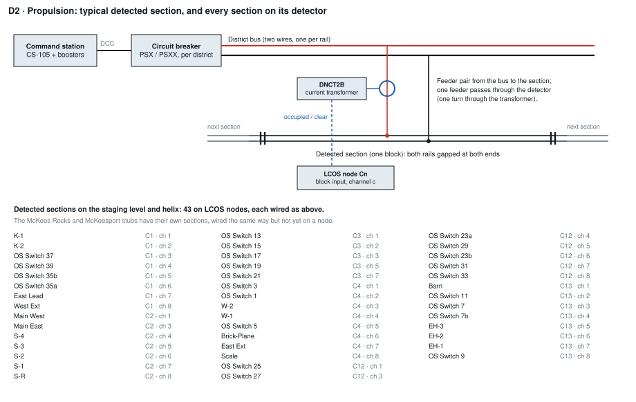
Drawing D2: propulsion, typical detected section. Every one of the 43 sections listed in Appendix B is wired this way.Drawing D3: turnout, powered frog and position contact (MTB MP4, two SPDT contacts).Drawing D4: crossover, two powered-frog turnouts gapped between the frogs.
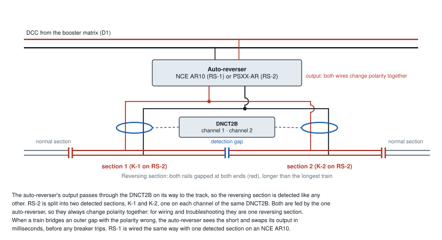
Drawing D5: reversing section on an auto-reverser.Drawing D6: computer-to-railroad interface, from JMRI through the MQTT broker, the bridge program and the bridge node to the LCOS field nodes.
Label cross-reference
Generic labels used in this document, with the names used on the layout fascia, the panels and the wiring records in Appendix H.
Generic labels and layout names
Label in this document
Name on the layout and in the records
Main line (west), RS-1
Main West (Switch 1 to Switch 23)
Main line (east)
Brick-Plane, East Ext, Main East
Double-track section
West Ext and East Lead (Switches 23 and 33 to Switch 35)
RS-2, return loop
K-1 and K-2, the loop at Princess
Passing siding
Scale (Switch 5 to Switch 7), at Plane
Yard lead
Barn (Switch 7 to Switch 13) and OS Switch 13 and 15
Yard Y1, Y2, Y3, Y4, Y5
South Yard S-R, S-1, S-2, S-3, S-4
Engine storage E1, E2, E3
EH-1, EH-2, EH-3 (engine house at Barn)
Holding tracks
W-1 and W-2, West Yard
To helix
H1 (to the main level) and H2 (to the upper level)
District A to D
The four PSX-series breaker districts on staging and the helix (power district record, Appendix H)
Every detected section on the staging level and helix, from the railroad's block table (jmri/layouts/hart/data/block_lengths.csv). Each is gapped in both rails at both ends and wired as drawing D2. "Node · ch" is the LCOS node and detector channel that reports it. Lengths are measured or timed; OS sections marked ≈ are estimates.
{{APPENDIX_B}}
Commercial components
Commercial components used in Requirements 1 to 3
Component
Maker
Used for
Items
CS-105 command station
TCS (Train Control Systems)
DCC command station and track output
1
B-106 booster
TCS
Track power
1
PSX-series circuit breakers
DCC Specialties
Districts A to D
1, 2
AR-10 auto-reverser
see note
RS-1
1, 2
PSX-AR auto-reverser
DCC Specialties
RS-2
1, 2
Turnouts
Peco
All staging turnouts and crossovers
2
MP4 slow-motion switch machine
MTB
Turnout drive; frog contact; position contact
2, 3a
Touch Toggle buttons, Universal Translator
Berrett Hill
Fascia control and position lamps
3a
LCOS node, input and output boards
Beagle Bay Inc.
Machine drive, contact and button inputs
2, 3a, 3v
DNCT2B, DNCTA current-sense detectors
Beagle Bay Inc.
Block detection
3b
Arduino Nano, nRF24L01 radio
Arduino; Nordic-based module
Bridge node hardware
3v
Raspberry Pi
Raspberry Pi Ltd
Runs JMRI and the MQTT broker
3b, 3v
JMRI
JMRI project (free software)
Panels, sensor and turnout tables
3a, 3b, 3v
Mosquitto MQTT broker
Eclipse Foundation (free software)
Message broker
3v
Terminal strips, bus and feeder wire
Various
Buses, booster matrix, feeders
1
Note: the AR-10's maker is to be confirmed from the unit before submission (see the open items in the README).
Further control features, not claimed
These features are built and in use, but are not claimed, so that the three claimed items stand without depending on commercial software. Any of them can be offered in place of a claimed item if the evaluator asks.
Further control features
SOQ item
What is built
CTC system
A dispatcher's CTC desk (CATS, laid out as a Union Switch & Signal machine) and a second lever-style board. They line routes and clear signals at each control point, refuse a route through an occupied block or a locked switch, and take their field state from the machine contacts and detectors. Panels, interlocking tables and signal logic were drawn up and configured for this railroad on stock JMRI and CATS.
Computer control
JMRI on a Raspberry Pi controls every turnout, sensor and signal through the bridge (Section 5.4). Turnouts can be thrown from the fascia, a DCC throttle or the computer, and every one reports back.
Computerized block detection
The 43 detected sections drive the signal logic, CTC route locking and JMRI's Dispatcher, which tracks each train from block to block. Timed runs between detectors were used to measure section lengths and locomotive speeds.
Computerized operation
Scripts written for this railroad run inside JMRI from start-up: a signal coordinator that sets every mast from routes and occupancy, and a panel status program that keeps the panels in step with the field. JMRI's Dispatcher runs trains automatically between twelve stations from stored train files.
Bridge message reference
Messages carried by the computer-to-railroad interface (Section 5.4). <addr> is the device address, node number × 100 + device number; for example, switch 0 on node 1 is 100. Serial lines between the bridge node and the program use the same topic and payload, separated by a space.
MQTT topics used by the bridge
Direction
Topic
Payload
Meaning
Railroad → computer
track/turnout/<addr>
CLOSED, THROWN
Switch machine position from its contact
Railroad → computer
track/sensor/<addr>
ACTIVE, INACTIVE
Block occupied or clear; button pressed
Railroad → computer
track/signalmast/<addr>
aspect; Lit; Unheld
Signal aspect as shown in the field
Computer → railroad
track/cmd/turnout/<addr>
THROWN, CLOSED, TOGGLE, GET
Throw a turnout, or ask its position
Computer → railroad
track/signalhead/<addr>
Red, Yellow, Green, Dark
Set a signal head
Program → all
track/bridge/status
online, offline (retained)
Whether the link is up
Operator → program
track/bridge/cmd
PING, RESUBSCRIBE, REOPEN
Health check and recovery
Photograph register
Photographs in this document, with the file each comes from. Photographs marked "pending" are still to be taken; a placeholder shows where each goes.
{{PHOTO_REGISTER}}
Glossary
Auto-reverser
A device that feeds a reversing section and swaps its polarity when a train bridges a gap with the polarity wrong.
Booster
An amplifier that puts the command station's DCC signal on the track at full power.
Booster matrix
Terminal strips where any booster output can be connected to any district.
Circuit breaker (electronic)
A device that cuts power to its district within milliseconds of a short and restores it when the short is removed.
Command station
The DCC unit that takes throttle commands and generates the digital signal sent to every decoder.
DCC
Digital Command Control, the NMRA standard for sending addressed commands to locomotive decoders through the rails.
Detected section
A length of track gapped in both rails at both ends, with its own feeders and detector channel; called a block on the SOQ form.
District
A group of sections fed through one protection device.
Feeder
A wire from a bus to a rail.
Frog
The part of a turnout where two rails cross. A powered frog is a metal frog connected to one rail or the other according to the route.
JMRI
Java Model Railroad Interface, free software for railroad control, panels and signalling.
LCOS
A commercial radio control system of nodes, input, output and detector boards from Beagle Bay Inc.
MQTT
A standard publish-and-subscribe messaging protocol. A broker passes each message from its sender to the programs that subscribe to its topic.
OS section
The detected section that holds a turnout (from "on sheet", the railroad term for a train reported past a station).
SPDT
Single pole, double throw: a switch contact with one common and two throws.
Railroad wiring records
The pages that follow are the railroad's own records, reproduced as they stand on {{DATE}}. They use the layout's own names; Appendix A cross-references them. They are generated from the railroad's wiring inventory (version 86) and are the as-built detail behind drawings D1 to D6.